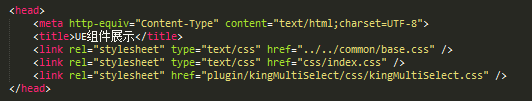
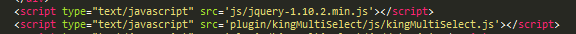
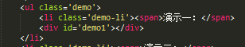
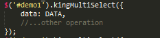

KingUI——自己的组件之家
说明：本站搭建 前端开发组 源码开放
kingMultiSelect——多选复选下拉列表,下拉列表树型小插件。目前最多支持两个层级，可完成多复选功能。联想输入搜索功能，内部功能回调机制，记忆勾选功能等。支持chrome,ieX+;
1.引入kingMultiSelect包至项目目录pathX;
2.在页面引入jquery及相应css、js文件;
 3.fn式插件调用;
 调用方法：$(wrapId).kingMultiSelect(methodName,param1,param2,...)